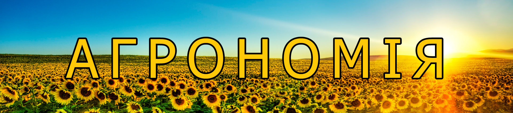
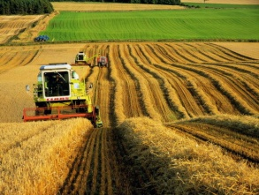
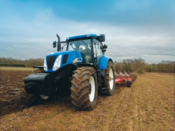
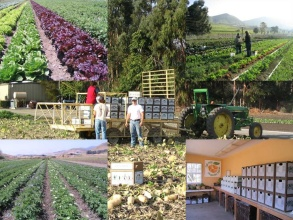
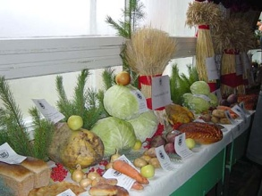

Спеціальність 201
"Агрономія"

Спеціальність відкрита в 1999 році.Створені всі навчальні кабінети і лабораторії з загальноосвітніх, загально – технічних та спеціальних дисциплін , для підготовки фахівців.
Всі лабораторії і навчальні кабінети мають необхідне методичне забезпечення, оснащені технічними засобами навчання , комп’ютерною технікою , приладами і обладнанням для проведення лабораторних і практичних робіт.
Для проведення практичних занять , окремих видів практик є навчально – дослідне господарство, яке має 235,4 гектарів загальної земельної площі , і в тім числі 186 гектарів ріллі.
Для якісної підготовки фахівців є молодий навчально – виробничий сад на площі 10 гектарів на сучасних підщепах ММ -106 і ММ – 9 , є ягідні культури і виноград , які займають площу 1 гектар.

З особливою турботою студенти відносяться до парників де вирощується розсада , та теплиці, в якій вирощуються сучасні сорти різноманітних овочевих культур.Великим інтересом та увагою користується плодовий розсадник, де кожен студент проводить щеплення кісточкових та зерняткових порід дерев. Зараз за спеціальністю агронома навчається 85 студентів, їх підготовка повністю здійснюється за рахунок коштів державного бюджету. Відмінники навчання отримують іменні стипендії: М.О. Посмітного та братів Симиренків.
Після завершення навчання випускники - агрономи можуть працювати у фермерських господарствах, товариствах, спілках, насіннєвих інспекціях, земельних відділах чи створити власну справу. Бажаючі можуть продовжити навчання у вищих навчальних закладах ІІІ-IV рівнів акредитації за скороченим терміном, з якими укладені відповідні угоди.

